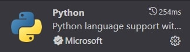
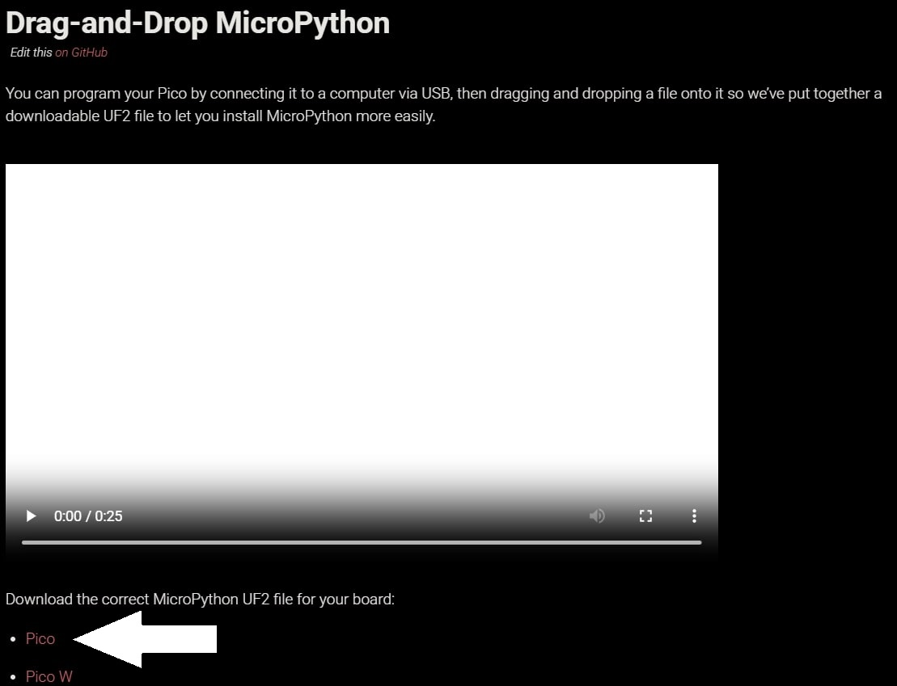
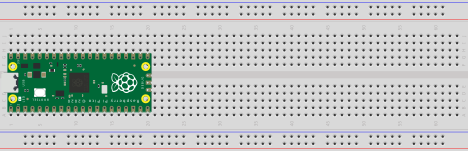
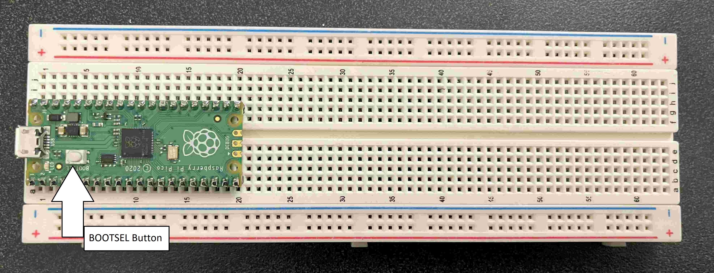
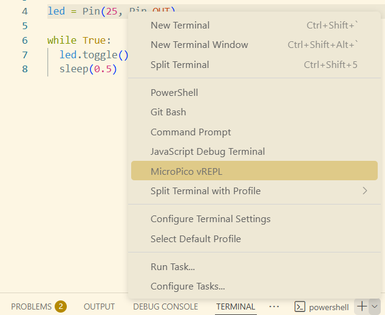
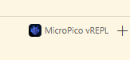
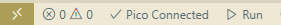

Blink Onboard LED#
In this portion of the lab, you will learn how to blink the onboard LED of the Raspberry Pi Pico.
Materials#
USB cable
Breadboard
Raspberry Pi Pico
Getting Started#
Step 1: Install VS Code#
Download and install Visual Studio Code (VSCode).
Step 2: Install Python and the Raspberry Pi Extensions#
Open VSCode and install the MicroPython and Python extensions from the Extensions tab.
Paste the following extensions ids in the search-bar and download the first extension that shows up
Python: ms-python.python
MicroPico: paulober.pico-w-go

Step 3: Download the MicroPython Firmware#
Visit the Raspberry Pi website and download the latest MicroPython UF2 file for the Raspberry Pi Pico.
The correct MicroPython UF2 file should say Pico.

Step 4: Set Up a New Project#
Open VSCode, create a new project called Phyical-Computing and open it.
Within this project, create a new folder called
lab1.Inside the
lab1folder, create another folder calledblinking_internal_led.Within the
blinking_internal_ledfolder, create amain.pyfile where you will write your code for this lab.
Hardware#
Step 1: Connect the Raspberry Pi to the breadboard#
The Raspberry Pi Pico can emit voltage into the breadboard. This is why we must connect the Pico to the breadboard so that we are able to receive voltage. To add our Raspberry Pi Pico to the breadboard, have the raspberry symbol face up and insert the headers into the holes of the breadboard. We want to ensure that the Pico doesn’t touch the +/- rails (the holes next to the blue and red lines at the edge of the breadboard).
Look at the image below for reference of what the setup should look like.

Step 2: Connect the Raspberry Pi Pico to Your Computer#
Connect your Raspberry Pi Pico to your computer using the USB cable provided in your lab kit. While plugging in the device, hold down the BOOTSEL button.

Your computer should recognize the Pico as a new device.
Step 3: Install MicroPython on the Pico#
Locate the downloaded MicroPython UF2 file from Getting Started Step 3
Drag and drop the file into the device folder of the Pico.
Everything should now be connected and your Pico should be able to run MicroPython, so let’s move on to the coding portion!
Code#
Step 1: Adding nescessary imports#
Import the machine and time libraries. The machine library allows us to interact with the GPIO pins on the Pico through the Pin class. The time libarary allows us to add a delay between each iteration of the loop using a sleep delay.
from machine import Pin
from time import sleep
GPIO stands for General-Purpose Input/Output. These pins are a physical interface between the Raspberry Pi and the outside world. The GPIO pins allow the Raspberry Pi to control and monitor the outside world by being connected to electronic circuits. The Pi is able to control LEDs, turning them on or off, run motors, and many other things. It’s also able to detect whether a switch has been pressed, the temperature, and light. There are 40 pins on the Raspberry Pi Pico and you can refer to the GPIO Pin diagram here to learn more.
{kind=link}
Step 2: Initalize LED#
In order to be able to light the onboard LED, we need to set up a variable which references the output pin of the onboard LED. The onboard LED pin is connected to GP (Ground Pin) 25.
Initialize the LED by doing:
led = Pin(25, Pin.OUT) # Initialize the built-in LED as an output
In this lab, the built-in LED pin is connected to GP25, so the first argument we input is 25. This same concept can be applied to other pins that you will be using in future labs.
Step 3: Toggling the LED#
We want our code to repeatedly turn the onboard LED on and off, so place the following code inside a while True loop which will cause the loop to run until you stop it.
led.toggle() # toggles between on and off state
The toggle() method will flip the pin between outputting voltage and not outputting voltage. If the pin is outputting voltage, toggle() will stop the pin from outputting voltage and the LED will turn off.
Step 4: Alternating the LED between on and off#
When we call these two functions back-to-back, they will switch states extremely fast. However, we want ours to be a bit more visible. To do this, we can use the sleep function in the time module, which will delay when the next iteration of the loop starts running. We can add this after led.toggle().
while True:
led.toggle()
sleep(0.5) # adds a 0.5 second delay
Step 5: Running the Program#
In VSCode, switch to using the MicroPico vREPL (from powershell or bash) to connect to your Raspberry Pi Pico.

Then, your terminal should display this.

Then, locate the Run button in the bottom taskbar and click Run to execute the code on your Raspberry Pi Pico. Make sure the Pico is connected before you run your code. You can stop or reset the program at anytime using the controls in the bottom taskbar or by pressing CTRL+C on your computer (CMD+C on Mac).
